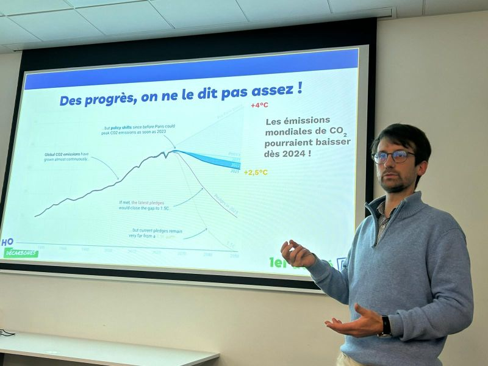
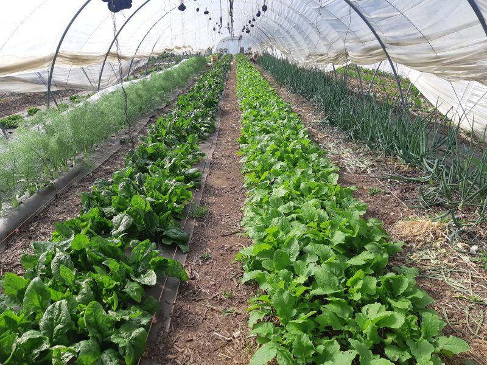

Arthur de Lassus
La transition écologique par la tête et le corps.
Expert énergie-climat et maraîcher, je lie la réflexion théorique à l’action concrète pour bâtir un futur vraiment durable.

La tête
- Expert énergie-climat
- Rapports & conférences
- Créateur et animateur d’ateliers

Le corps
- Maraîchage bio
- Autonomie énergétique
- Autoconstruction en paille
Pourquoi je refuse de choisir entre la plume & la pelle.
Comprendre l’impact carbone du béton pousse naturellement à construire en paille. Subir un aléa climatique au champ donne une légitimité que les rapports n’ont pas. Pour moi, la transition écologique ne se décrète pas, elle s’expérimente. C’est dans cet aller-retour permanent que je puise mon énergie.
Mon manifeste